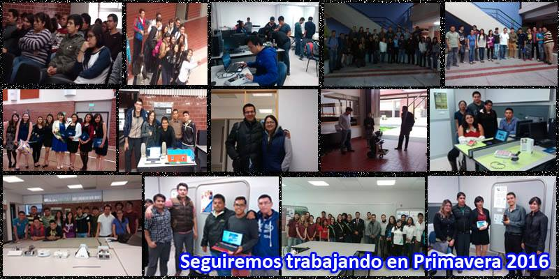
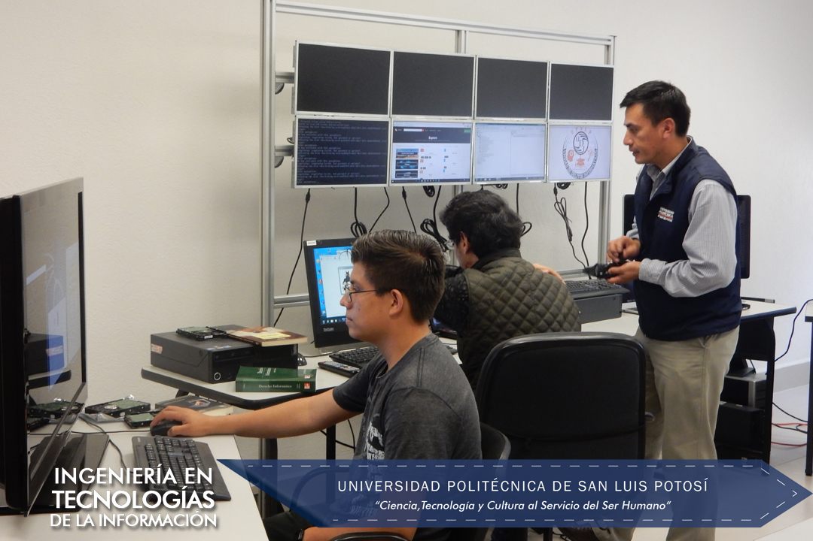

La Academia ATIT organiza diversas actividades relacionadas con las carreras de ITI (Tecnologías de la Información) e ITEM (Telemática). Además, promueve el progreso de sus alumnos solicitando a la Universidad equipo actualizado cada año, asegurando así un aprendizaje moderno y relevante
La UPSLP abrió sus puertas el 3 de septiembre de 2001, en el ex Convento Carmelita. Fue un día inolvidable: 465 estudiantes inscritos en 4 carreras (ISTI, ITI, LAG y LMI), los padres de familia, 27 profesores y un escaso número de colaboradores administrativos daban vida a una nueva comunidad educativa. Llenos de ilusiones, pero también de incertidumbres, su propósito era hacer realidad un sueño y responder cabalmente a las expectativas que sobre la naciente Universidad tenía la sociedad potosina. Nació, así, la Universidad Politécnica, un proyecto para el Estado de San Luis Potosí que atrajo la atención de las autoridades educativas federales para reproducir en otros estados el Modelo Académico innovador de la UPSLP. Somos la primera de las 60 Universidades Politécnicas que hoy se agrupan en la Coordinación General de Universidades Tecnológicas y Politécnicas.
